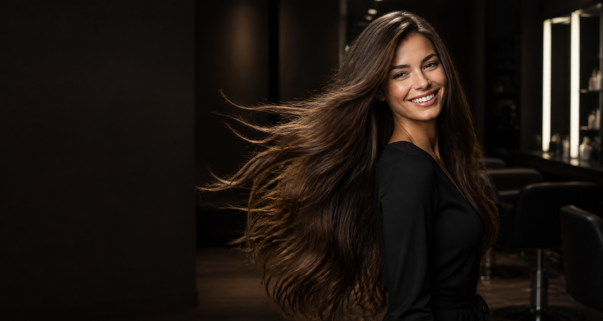
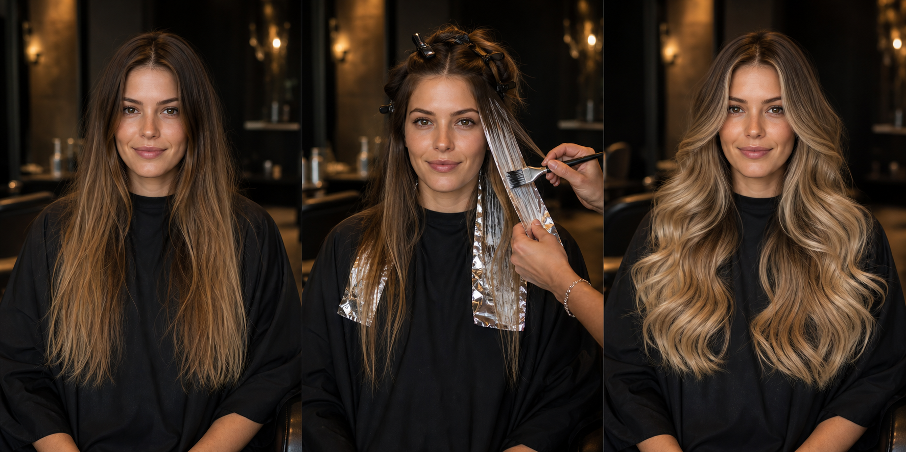
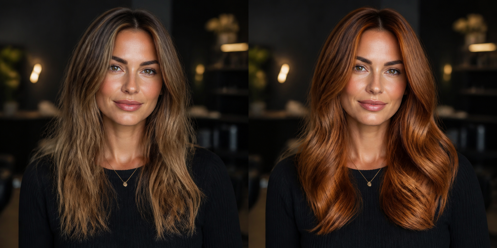
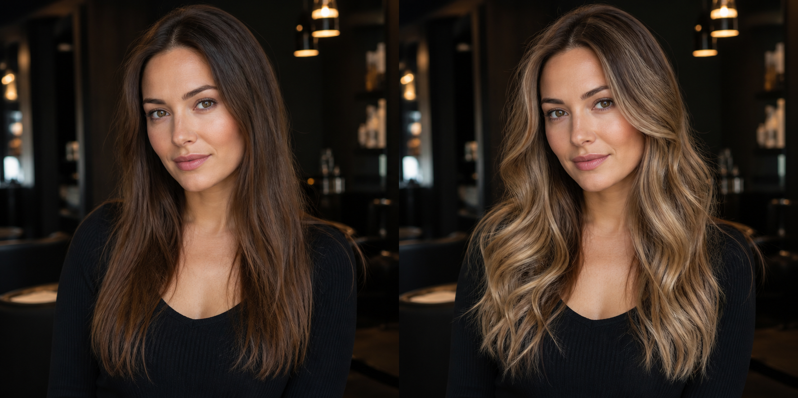
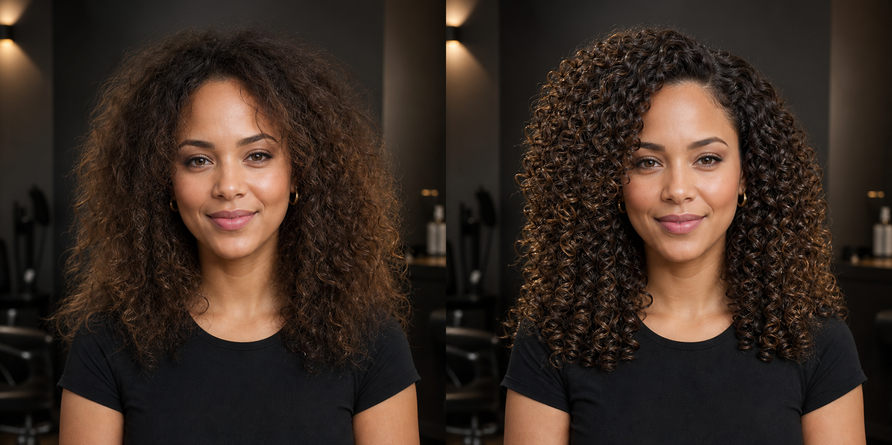
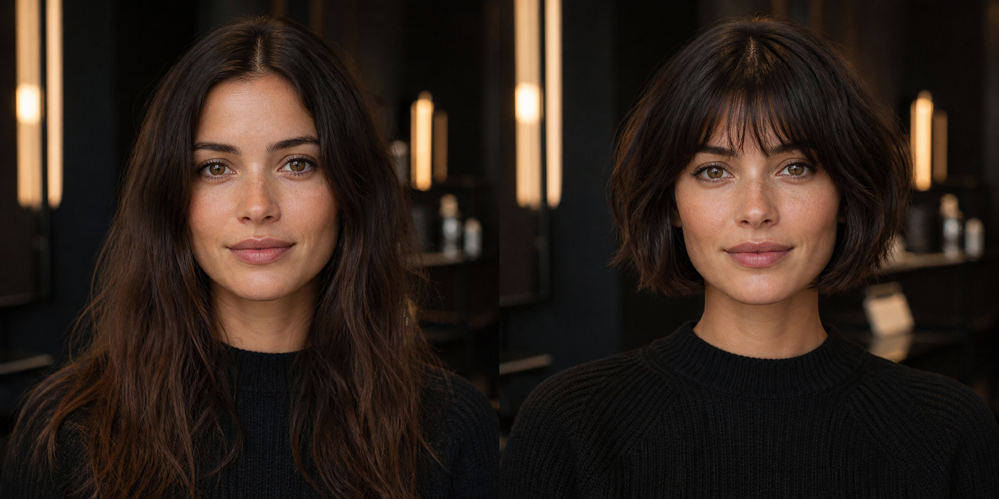

ПАРИКМАХЕР · ЕРЕВАН
Твой цвет.
Твоя форма.
Твой характер.
Образ, который подчёркивает тебя
и красиво живёт каждый день.смотреть преображение ↓
и красиво живёт каждый день.смотреть преображение ↓
ПРЕОБРАЖЕНИЕ · ЛИСТАЙ
Из длины —
в вау-эффект.

ДООКРАШИВАНИЕВАУ-РЕЗУЛЬТАТ
МОЙ ПОДХОД
Техника, которую не видно.
Результат, который замечают.
узнать обо мне ↗

01 / 04Форма, цвет
и движение.индивидуальный образ
и движение.индивидуальный образ
ИЗБРАННЫЕ РАБОТЫ
2024—2026



спрашивают, кто тебя сделал?»
ЗАПИСЬ